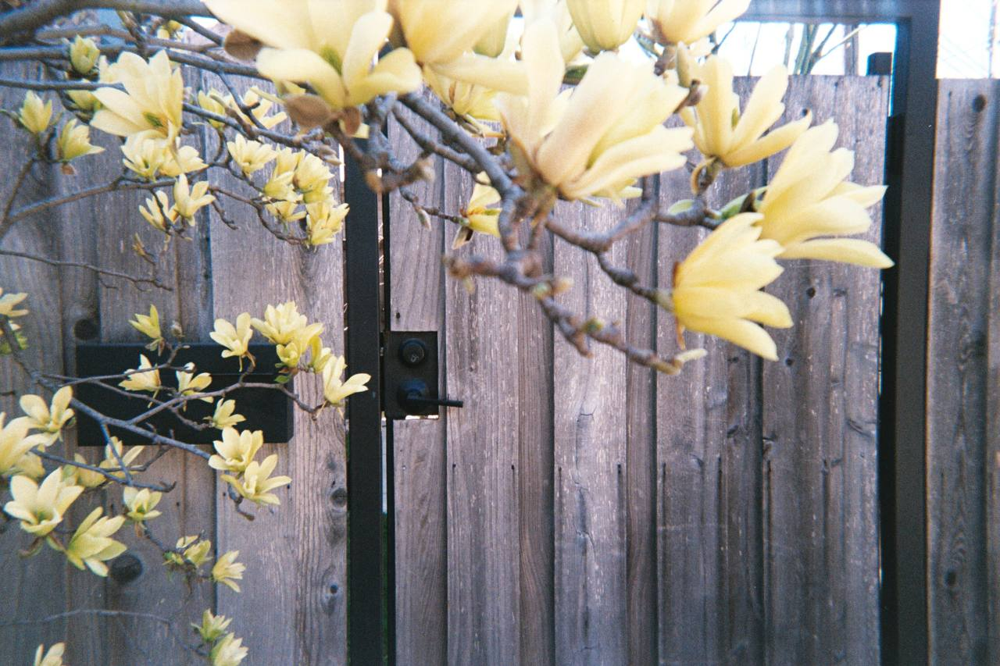
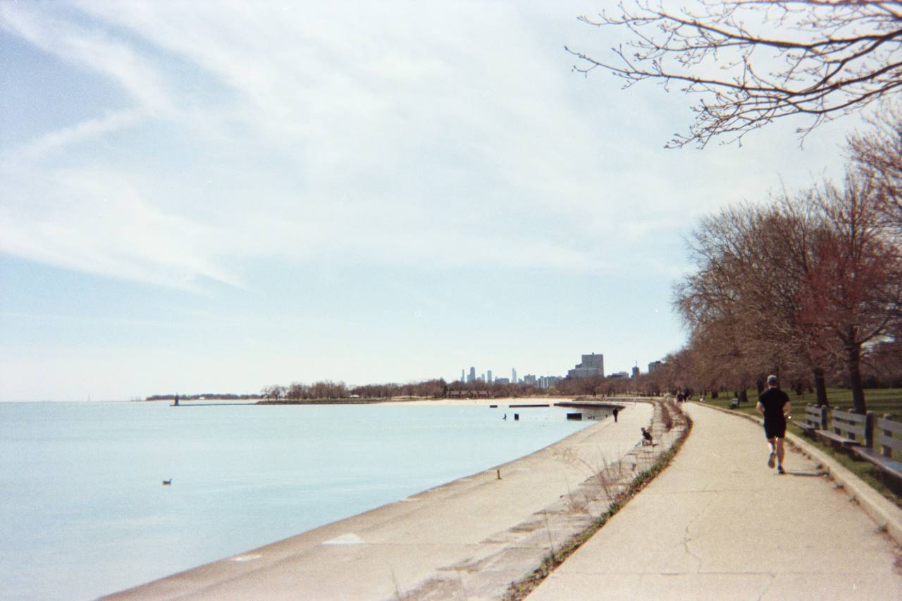

About Edgewater
Edgewater, located on Chicago's North Side, is a vibrant lakefront community known for its rich history, stunning architecture, and diverse neighborhoods. Originally part of Lake View Township, it was annexed by Chicago in 1889 and quickly developed into a popular residential area for Chicago’s elite. Beautiful lakefront homes, beaches, and thriving local businesses helped Edgewater grow into a distinct and desirable community.
One of Edgewater's most famous landmarks was the luxurious Edgewater Beach Hotel, which opened in 1916. This resort attracted celebrities, politicians, and tourists from all over the country with its private beach and grand ballrooms. Although the hotel is gone today, Edgewater’s spirit of charm and community lives on through its preserved historic districts and active local culture.
Today, Edgewater is beloved for its walkable streets, beautiful parks, strong arts scene, and vibrant dining options. Residents and visitors alike enjoy easy access to Lake Michigan’s beaches, cultural festivals, and a variety of unique shops and restaurants.
Neighborhoods and Historic Districts
- Andersonville: Known for its Swedish heritage, indie shops, and lively commercial district.
- Edgewater Glen: A quiet residential area featuring charming early 20th-century homes.
- Bryn Mawr Historic District: Famous for historic architecture, art deco buildings, and vintage streetlamps.
- Lakewood-Balmoral Historic District: Listed on the National Register of Historic Places, with beautifully preserved homes from the late 1800s.
Parks and Recreation
Edgewater offers fantastic outdoor spaces, including access to multiple beaches and parks. The community is adjacent to Lincoln Park, Chicago's largest park, which stretches for seven miles along the lakefront. Locals love visiting Foster Beach and Osterman Beach for summer fun and year-round scenic views.
Community Demographics
| Population Group | Percentage |
|---|---|
| White | 56.6% |
| Black | 12.3% |
| Hispanic | 15.0% |
| Asian | 12.4% |
My Favorite Places in Edgewater
- Foster Beach
- Coffeeshop Loaves and Witches
- Sfera Sicilian Street Food
- Blowfish Sushi & Ramen
- Lost Larson
- Edgewater Candles
- Uncharted Books
Explore Edgewater
Contact
If you have questions about visiting Edgewater, feel free to email us!


